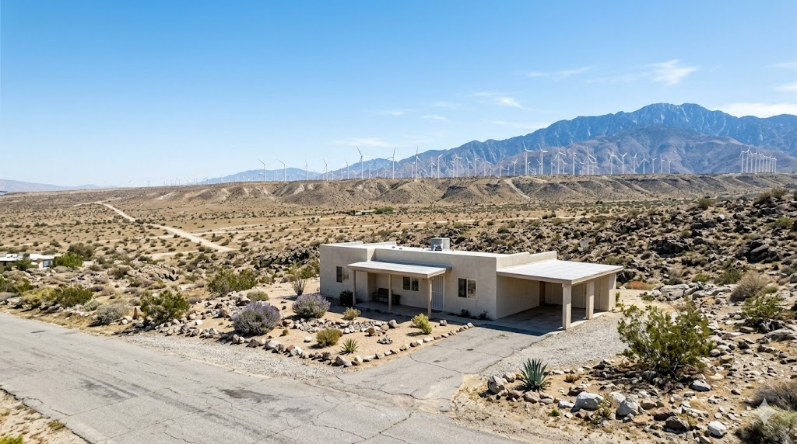

Located north of Interstate 10, Desert Hot Springs is known for its natural hot mineral water aquifer and growing spa resort industry. The city has become one of the Coachella Valley's most dynamic real estate markets, attracting buyers seeking affordability, investors eyeing rental potential, and wellness-oriented residents drawn to the therapeutic waters. Recent development has brought new commercial amenities and residential communities.
Desert Hot Springs offers the Coachella Valley's most affordable home prices, making it popular with first-time buyers and investors. The market includes older ranch-style homes, newer tract developments in Mission Lakes and other communities, and properties with permitted hot mineral water wells. The spa resort sector adds a unique commercial real estate dimension. Values have appreciated significantly in recent years as buyer demand has pushed north of I-10.

Natural hot mineral water spas, Cabot's Pueblo Museum, Mission Springs Park, growing wellness tourism industry, mountain and valley panoramic views.
Contact Brian Ward Appraisal to request a certified residential appraisal in Desert Hot Springs. Most reports are delivered within 3–5 business days, with rush service available for time-sensitive deadlines.
Phone: (760) 534-5449
Email: contact@brianward.com
Online: Request an appraisal online